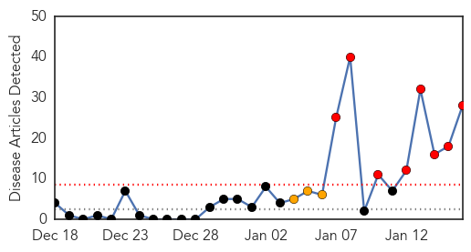
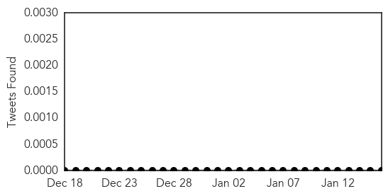
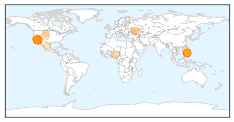
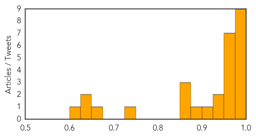
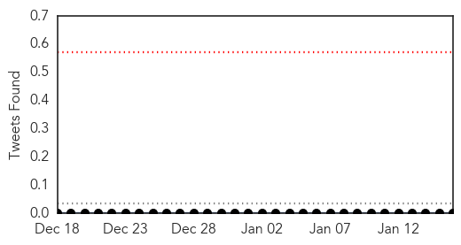

Measles
30-Day Web Trend
8 alerts, 3 warnings

30-Day Twitter Trend
0 alerts, 0 warnings

Article Locations
Article Confidences
Top Articles:
- 0.998
- Measles Continues to Spread in Western U.S.
- 0.996
- Disney measles outbreak: Questions and answers
- 0.994
- How the disease spreads and how to stop it
- 0.994
- Q&A: Measles pops up in outbreak linked to Disney parks
- 0.992
- Health And Family, Lifestyle Features, The Philippine Star
- 0.992
- What to know about measles outbreak linked to Disneyland
- 0.990
- Measles Pops Up In Outbreak Linked To Disneyland Parks « CBS Los Angeles
- 0.985
- Measles pops up in outbreak linked to Disney parks
- 0.981
- O.C. measles cases reach 16
- 0.967
- Disneyland, holiday travel a perfect mix for measles’ spread
- 0.965
- Measles From Disneyland Spreads to 22 Cases
- 0.960
- Measles in Utah, Health Officials Recommend Vaccine
- 0.958
- 6 New Cases of Measles in California Confirmed
- 0.958
- Ukraine health system buckling under weight of humanitarian crisis - Ukraine
- 0.956
- Disneyland measles tally rises, unvaccinated OC high school students kept home
- 0.951
- Health Highlights
- 0.944
- Measles cases linked to Disney Parks swell, spread across U.S. border
- 0.930
- O.C. measles cases climb to 16
- 0.914
- News Scan for Jan 16, 2015
- 0.885
- Disney measles outbreak grows in California, Mexico infant infected
- 0.867
- Measles outbreak: 16 cases in Orange County, 10 from Disneyland
- 0.861
- Disneyland linked to 10 measles cases in San Diego County
- 0.857
- 10 measles cases confirmed in San Diego County
- 0.737
- Lucas County student presumed to have measles, being kept home until testing completed
- 0.670
- Health crisis worsens in eastern Ukraine: WHO
- 0.626
- Doctor says rise of measles cases is preventable and unacceptable
- 0.626
- MULTIPLE MEASLES CASES TIED TO DISNEY THEME PARKS
- 0.623
- 13 more California measles cases tied to Disney
Top Tweets:
-
No tweets found for Jan 16, 2015
Mumps
30-Day Web Trend
1 alerts, 0 warnings

30-Day Twitter Trend
0 alerts, 0 warnings

Article Locations

Article Confidences

Top Articles:
Top Tweets:
-
No tweets found for Jan 16, 2015